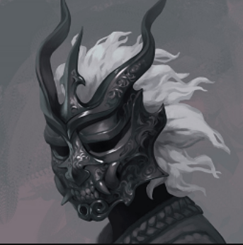
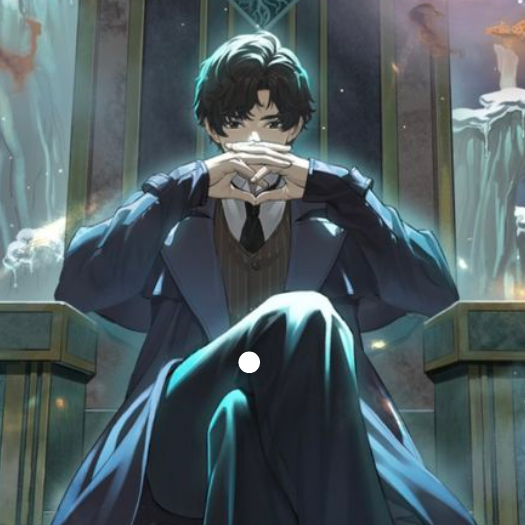
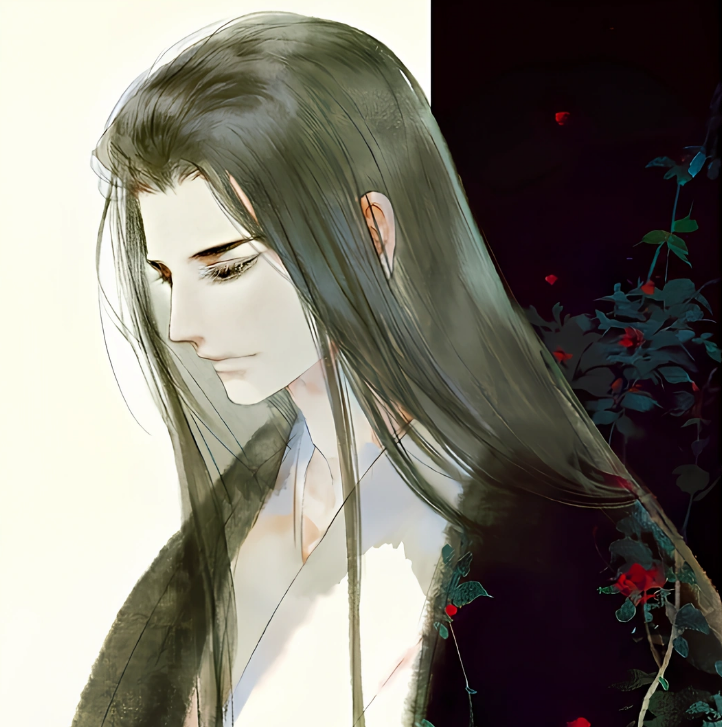
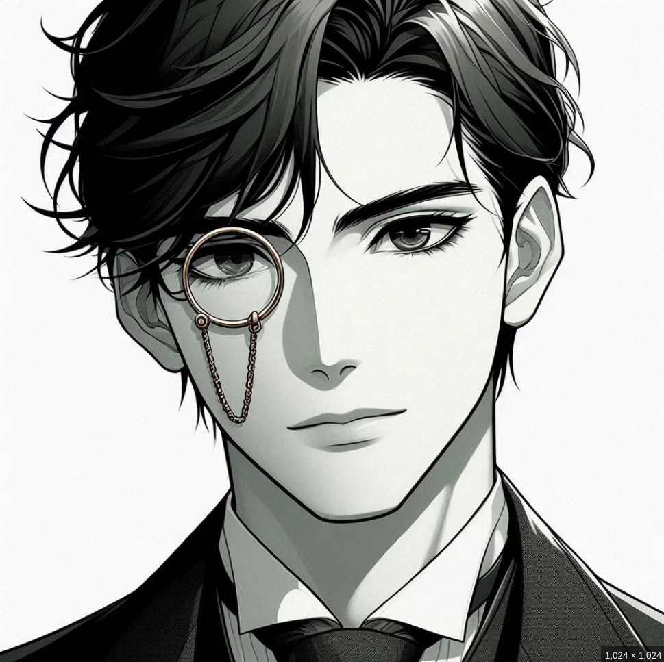

Shadow Slave
Growing up in poverty, Sunny never expected anything good from life. However, even he did not anticipate being chosen by the Nightmare Spell and becoming one of the Awakened - an elite group of people gifted with supernatural powers. Transported into a ruined magical world, he found himself facing against terrible monsters - and other Awakened - in a deadly battle of survival.

Lord Of The Mysteries
Waking up to be faced with a string of mysteries, Zhou Mingrui finds himself reincarnated as Klein Moretti in an alternate Victorian era world where he sees a world filled with machinery, cannons, dreadnoughts, airships, difference machines, as well as Potions, Divination, Hexes, Tarot Cards,and Sealed Artifacts

Reverend Insanity
A story of a villain, Fang Yuan who was reborn 500 years into the past with the Spring Autumn Cicada he painstakingly refined. With his profound wisdom, battle and life experiences, he seeks to overcome his foes with skill and wit

Throne Of Magical Arcana
An ordinary young man on earth, Xia Feng, traveled to a world of sword and magic, and took the body of Lucien Evans, another ordinary young man.